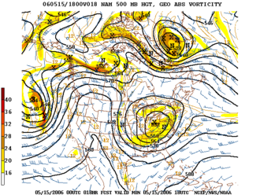

Persistence
The simplest method of forecasting the weather, persistence, relies upon today's conditions to forecast tomorrow's. This can be a valid way of forecasting the weather when it is in a steady state, such as during the summer season in the tropics. This method strongly depends upon the presence of a stagnant weather pattern. Therefore, when in a fluctuating pattern, it becomes inaccurate. It can be useful in both short- and long-range forecast|long range forecasts.
Use of a barometer
Measurements of barometric pressure and the pressure tendency (the change of pressure over time) have been used in forecasting since the late 19th century. The larger the change in pressure, especially if more than 3.5 hPa (2.6 mmHg), the larger the change in weather can be expected. If the pressure drop is rapid, a low pressure system is approaching, and there is a greater chance of rain. Rapid pressure rises are associated with improving weather conditions, such as clearing skies.
Looking at the sky
Nowcasting
The forecasting of the weather within the next six hours is often referred to as nowcasting. In this time range it is possible to forecast smaller features such as individual showers and thunderstorms with reasonable accuracy, as well as other features too small to be resolved by a computer model. A human given the latest radar, satellite and observational data will be able to make a better analysis of the small scale features present and so will be able to make a more accurate forecast for the following few hours. However, there are now expert systems using those data and mesoscale numerical model to make better extrapolation, including evolution of those features in time. Accuweather is known for a Minute-Cast, which is a minute-by-minute precipitation forecast for the next two hours.
Use of forecasting models

An example of 500 mbar geopotential height prediction from a numerical weather prediction model
In the past, the human forecaster was responsible for generating the entire weather forecast based upon available observations. Today, human input is generally confined to choosing a model based on various parameters, such as model biases and performance. Using a consensus of forecast models, as well as ensemble members of the various models, can help reduce forecast error. However, regardless how small the average error becomes with any individual system, large errors within any particular piece of guidance are still possible on any given model run. Humans are required to interpret the model data into weather forecasts that are understandable to the end user. Humans can use knowledge of local effects that may be too small in size to be resolved by the model to add information to the forecast. While increasing accuracy of forecasting models implies that humans may no longer be needed in the forecasting process at some point in the future, there is currently still a need for human intervention.
Analog technique
The analog technique is a complex way of making a forecast, requiring the forecaster to remember a previous weather event that is expected to be mimicked by an upcoming event. What makes it a difficult technique to use is that there is rarely a perfect analog for an event in the future. Some call this type of forecasting pattern recognition. It remains a useful method of observing rainfall over data voids such as oceans, as well as the forecasting of precipitation amounts and distribution in the future. A similar technique is used in medium range forecasting, which is known as teleconnections, when systems in other locations are used to help pin down the location of another system within the surrounding regime. An example of teleconnections are by using El Niño-Southern Oscillation (ENSO) related phenomena.